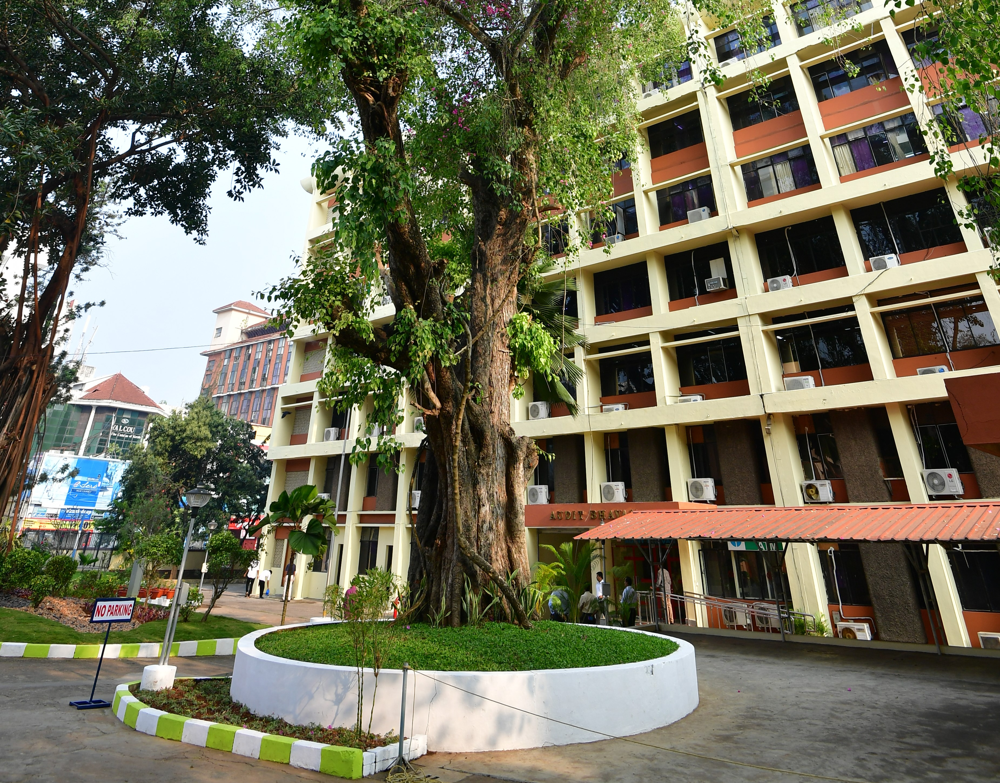

1 / 6

O/o AG (GSSA), Kerala
2 / 6

O/o AG (GSSA), Kerala
3 / 6

O/o AG (GSSA), Kerala
4 / 6

O/o AG (GSSA), Kerala
5 / 6

O/o AG (GSSA), Kerala
6 / 6

O/o AG (GSSA), Kerala
1 / 6
AG, ERSA
2 / 6
DAG, ES II
3 / 6
DAG SGS II
4 / 6
DAG LBA
5 / 6

DAG ADMIN
6 /6

DAG SGS III
DUMMY CONTENT TO BE REMOVED LATER!!!!!!!!!!! POEM BY FROST Whose woods these are I think I know. His house is in the village though; He will not see me stopping here To watch his woods fill up with snow. My little horse must think it queer To stop without a farmhouse near Between the woods and frozen lake The darkest evening of the year. He gives his harness bells a shake To ask if there is some mistake. The only other sound’s the sweep Of easy wind and downy flake. The woods are lovely, dark and deep, But I have promises to keep, And miles to go before I sleep, And miles to go before I sleep.
DUMMY CONTENT TO BE REMOVED LATER!!!!!!!!!!! POEM BY LONGFELLOW I shot an arrow into the air, It fell to earth, I knew not where; For, so swiftly it flew, the sight Could not follow it in its flight. I breathed a song into the air, It fell to earth, I knew not where; For who has sight so keen and strong, That it can follow the flight of song? Long, long afterward, in an oak I found the arrow, still unbroke; And the song, from beginning to end, I found again in the heart of a friend.
DUMMY CONTENT TO BE REMOVED LATER!!!!!!!!!!!
POEM BY LONGFELLOW
When the summer fields are mown,
When the birds are fledged and flown,
And the dry leaves strew the path;
With the falling of the snow,
With the cawing of the crow,
Once again the fields we mow
And gather in the aftermath.
Not the sweet, new grass with flowers
Is this harvesting of ours;
Not the upland clover bloom;
But the rowen mixed with weeds,
Tangled tufts from marsh and meads,
Where the poppy drops its seeds
In the silence and the gloom.
DUMMY CONTENT TO BE REMOVED LATER!!!!!!!!!!!
POEM BY ROSETTI
My heart is like a singing bird
Whose nest is in a water'd shoot;
My heart is like an apple-tree
Whose boughs are bent with thickset fruit;
My heart is like a rainbow shell
That paddles in a halcyon sea;
My heart is gladder than all these
Because my love is come to me.
Raise me a dais of silk and down;
Hang it with vair and purple dyes;
Carve it in doves and pomegranates,
And peacocks with a hundred eyes;
Work it in gold and silver grapes,
In leaves and silver fleurs-de-lys;
Because the birthday of my life
Is come, my love is come to me.